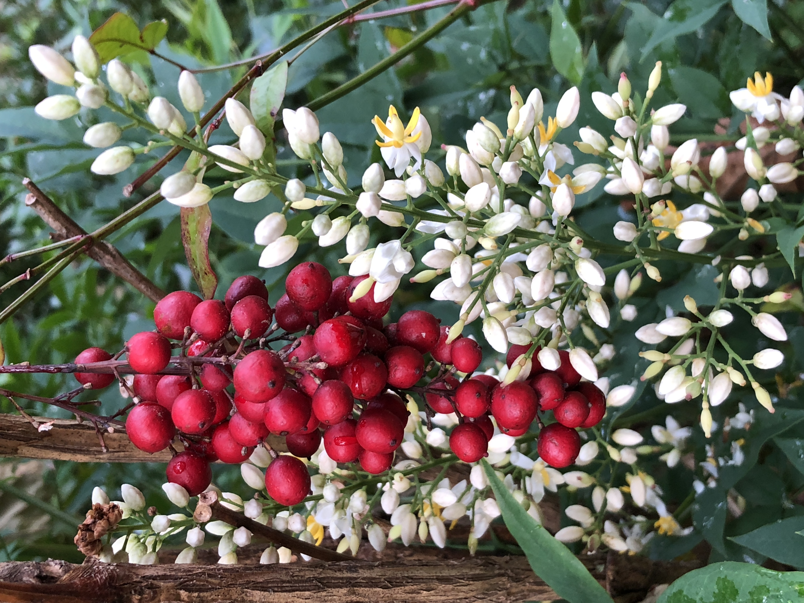
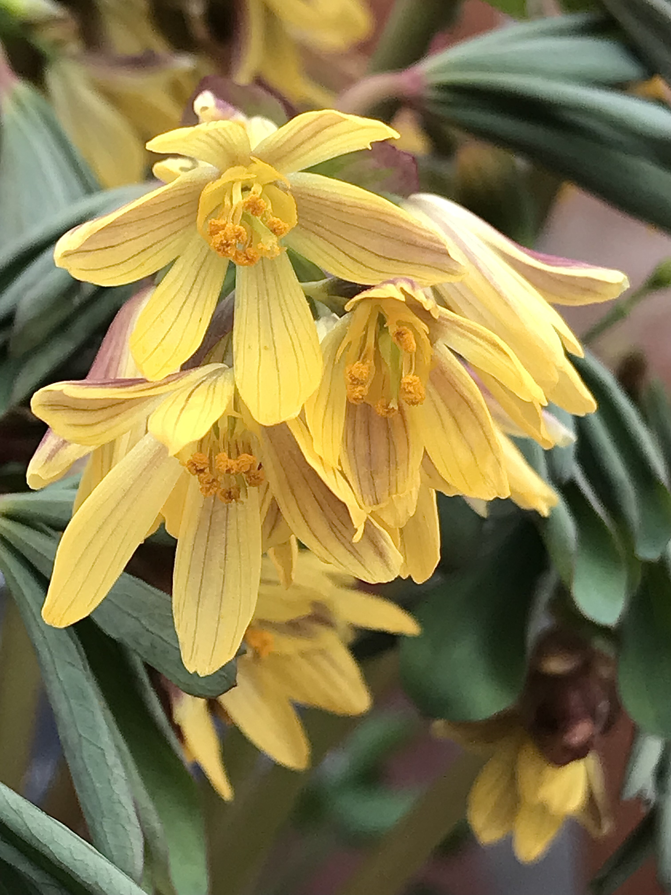
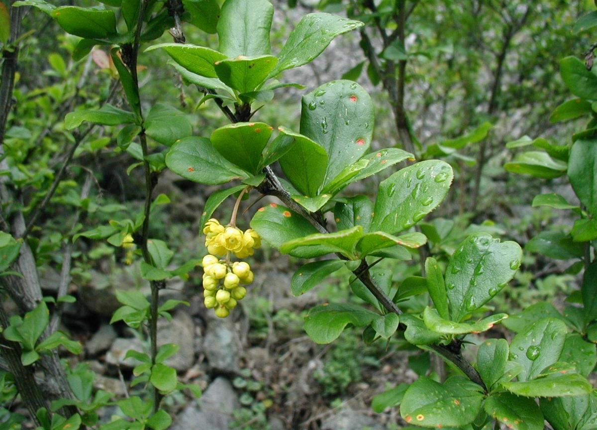
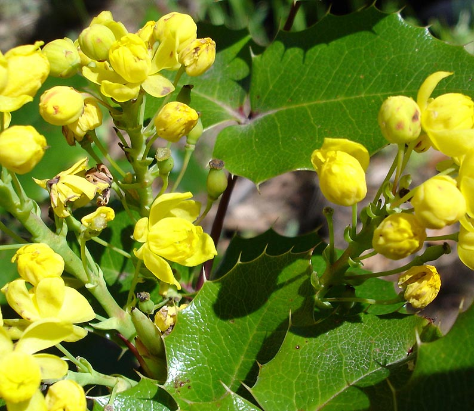
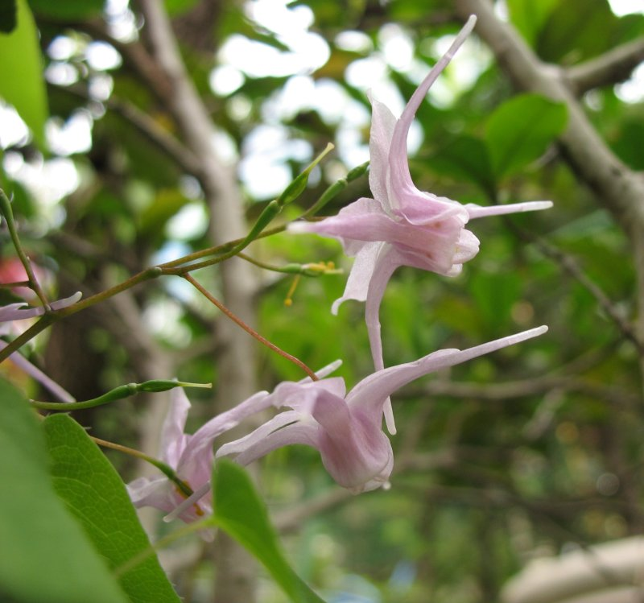

Berberidaceae
barberry family
|  Nandina domestica from Wikimedia Commons by Famartin - Own work, CC BY-SA 4.0 |
 Gymnospermium albertii from Wikimedia Commons by Flobbadob - Own work, CC BY-SA 4.0 |
|  Berberis vulgaris (barberry) from Wikimedia Commons by Sten, CC BY-SA 3.0 |
 Berberis aquifolium (Oregon grape) from Wikimedia Commons by Jeantosti, CC BY-SA 3.0 |
{kind=link}
{kind=link}
{kind=link}
{kind=link}
botanical characteristics
Botany in a Day, p. 58-9 | "Berberidaceae", Wikipedia
- growth form
- dicot plant or shrub
- trees, shrubs and perennial herbaceous plants
- flowers
- floral parts typically come in multiples of 3s
- often multiple layers of sepals and petals
- flowers are regular and bisexual
- some species have 2-3 bracts
- usually 6 true sepals (4-15, rarely 0) and 6 petals (up to 12, rarely 0), typically ocurring in layers with 3 sepals/petals per layer
- reproductive structures
- usually 6 or 9 stamens (up to 18, usually in multiples of 3)
- ovary is positioned superior and consists of a single carpel
- matures as a berry or a follicle (dry fruit opening along a seam)
distribution
"Berberidaceae", Wikipedia
- 18 genera and around 700 known species, of which the majority are in the genus Berberis
- most species seem to native to either Asia (Middle East to Eastern Asia and Japan) or North America
ecological roles
"Berberis", Wikipedia
- Berberis species are used as food plants by the larvae of some Lepidoptera species, including the moths barberry carpet moth (Pareulype berberata), and mottled pug (Eupithecia exiguata)
- some species can infect wheat with stem rust, a serious fungal disease of wheat and related grains caused by Puccinia graminis
- B. canadensis, native to Appalachia and the Midwest United States, was nearly eradicated for this reason, and is now rarely seen extant, with the most remaining occurrences in the Virginia mountains
- some Berberis species have become invasive when planted outside of their native ranges, including B. glaucocarpa and B. darwinii in New Zealand (where it is now banned from sale and propagation), and B. vulgaris and B. thunbergii in much of the eastern United States
- Japanese barberry is considered an invasive plant in 32 US states
- deer-resistant because of its taste and is favoured as a shelter for ticks capable of transmitting lyme disease
common pharmacological constituents
"Angiosperm families - Berberidaceae Juss.", DELTA
- sugars transported as sugar alcohols + oligosaccharides + sucrose (Mahonia); not cyanogenic (with the segregate families excluded); alkaloids present (usually), or absent; berberine present (?always, colouring the tissues yellow); arbutin absent; iridoids not detected; proanthocyanidins present, or absent; when present, cyanidin, or delphinidin; flavonols present, or absent; when present, quercetin, or kaempferol and quercetin, or quercetin and myricetin; ellagic acid absent (6 species, 3 genera); aluminium accumulation not found; sieve-tube plastids S-type
patterns in medicinal actions
- strong medicinal actions on the body
- berberine present in many species, which is antibacterial, antiviral, antispasmodic, and a vasodilator
- stimulant action on various systems
- opening arteries to lower blood pressure (Berberis)
- stimulating liver function and ballbladder function (Berberis)
- stimulating the digestive system and elimination (Berberis)
- stimulating the uterus, helping induce menstruation and childbirth (Caulophyllum, Berberis)
- stimulating erections (Epimedium)
- strengthens/tones muscles by both stimulating and relaxing
traditional/cultural uses
"Berberis", Wikipedia
- Berberis vulgaris produces large crops of edible berries, rich in vitamin C, but with a sharp acid flavour
- in Europe for many centuries the berries were used for culinary purposes much as citrus peel is used
- used frequently in Iran, where they are referred to as zereshk (زرشک) in Persian
- berries are common in Persian cuisine in rice dishes such as zereshk polo (a dish of rice cooked in the Persian style with saffron and barberries, often served with chicken) and morassa polo (literal translation 'bejewelled rice', an opulent dish of rice with barberries and slivers of pistachio, almond, and orange peel) and as a flavouring for poultry
- because of their sour flavour, they are sometimes cooked with sugar before being added to Persian rice
- considered expensive and so are served in the finest of Persian dishe
- in Russia and Eastern Europe, it is sometimes used in jams as a source of pectin (especially with mixed berries)
- an extract of barberries is a common flavouring for soft drinks, candies, and sweets
- B. microphylla and B. darwinii (both known as calafate and michay) are two species found in Patagonia in Argentina and Chile whose berries are used for jams and infusions
"Achlys", Wikipedia | "Caulophyllum", Wikipedia | "Jeffersonia", Wikipedia
- Achlys has been used by native tribes of southern British Columbia as an insect repellent
- Caulophyllum has been used as a medicinal herb by American Indians
- many Native American tribes, and later European herbologists and mid-wives, would use this herb in conjunction with other herbs and fluids for abortive and contraceptive purposes
- Native Americans use Jeffersonia diphylla for a variety of medicines
- the Cherokee use an infusion of this plant for treating dropsy, as well as gravel and urinary tract problems, and as a poultice for sores and inflammation
- the Iroquois used a decoction of the plant to treat gall and diarrhea
- the whole plant was used in early American medicine as an antispasmodic, diuretic, emetic, expectorant and general tonic
warnings
- due to the presence of berberine and other alkaloids, it is not recommended to use members of this family during pregnancy
- the fruit/seeds of some species are toxic
extra information
prominent genera
- Achlys (deer's foots, vanilla leafs)
- Berberis (barberries)
- Caulophyllum (incl. blue cohosh)
- Epimedium (horny goat weeds)
- Jeffersonia (twinleafs)
- Nandina (nandinas)
- Podophyllum (mayapples)
- Sinopodophyllum (Himalayan mayapples)
plant highlights
see list of materia medica entries here
Caulophyllum thalictroides
 from Wikimedia Commons by Eric Hunt - Own work, CC BY-SA 4.0 |
common names: blue cohosh en español: cohosh azul |
description
"Caulophyllum thalictroides", Wikipedia
- single stalk rising from the ground with a single, large, three-branched leaf
- bluish-green leaflets are three-lobed and entire at the base, but serrate at the tip
- yellow-flowered inflorescence
- bluish berries, coated with a glaucous, waxy bloom
distribution
"Caulophyllum thalictroides", Wikipedia | "Blue Cohosh – Caulophyllum thalictroides", United Plant Savers
- grows in eastern North America, from Manitoba and Oklahoma east to the Atlantic Ocean
- found in hardwood forests and favors moist coves and hillsides, generally in shady locations, in rich soil
- listed as 'At Risk' by United Plant Saver
- listed as 'Threatened' in the state of Rhode Island
medicinal/magical uses
The Modern Herbal Dispensatory, p. 190-1
- antispasmodic, emmenagogue, oxytocic, cooling, drying, relaxing
- used in small doses over a period of time to induce delayed labor or menstruation
- taken during labor, it strengthens contractions and eases the pain of childbirth
- tonic action stimulates and relaxes the uterus at the same time, making it helpful for relieving painful menstrual symptoms like cramps, breast pain, and ovarian pain
The New Age Herbalist, p. 29, 32
- used by North American Indigenous women as a tea a few weeks before childbirth to make the birth process swift and easy
- picked up by European settlers to counter restlessness and pain during pregnancy and to reduce labor pains
- eases cramping and pain during menstruation
- also used to treat arthritis and ease stomach cramps
preparation methods
The Modern Herbal Dispensatory, p. 190-1
- decoction
- tincture
- powder
warnings
The Modern Herbal Dispensatory, p. 190-1 | The New Age Herbalist, p. 29, 32
- because it stimulates the uterus, should not be used during any stage of pregnancy except birth/full term or by people trying to become pregnant
- avoid during heavy menstrual bleeding
- professional supervision is advised when using to induce labor
- mildly toxic in large doses
- should not be used where there is high blood pressure or heart disease
- seeds are poisonous
Epimedium grandiflorum
|  from Wikimedia Commons by Sphl - Photo taken by Sphl., CC BY-SA 3.0 |
common names: barrenwort, bishop's hat, horny goat weed en español: sombrero de obispo, hierba de cabra en celo |
{kind=link}
description
"Epimedium grandiflorum", Wikipedia
- deciduous perennial with bright red stems
- green heart-shaped leaves (copper-tinged when young) which are slightly hairy on the bottom
- in spring it produces pink, white, yellow or purple long-spurred flowers
- The Latin specific epithet 'grandiflorum' means 'large-flowered'
distribution
"Epimedium grandiflorum", Wikipedia
- native to Japan and Korea
medicinal/magical uses
The Modern Herbal Dispensatory, p. 248-9
- aphrodisiac, vasodilator, warming, drying, slightly relaxing
- traditionally used in treating sexual dysfunction, fatigue, and arthritis
- active constituent icariin has been shown to help the body form and maintain an erection
- stimulates the production of osteoblasts, which are specialized cells involved in building bone mass
- flavonoids may stimulate the nerves and improve the sensation of touch
preparation methods
The Modern Herbal Dispensatory, p. 248-9
- powder
warnings
The Modern Herbal Dispensatory, p. 248-9
- high doses may result in breathing trouble, dizziness, vomiting, thirst, and dry mouth
sources
"Achlys" on Wikipedia. Retrieved 19 August 2025.
"Angiosperm families - Berberidaceae Juss." on DELTA - DEscription Language for TAxonomy. Retrieved 19 August 2025.
"Berberidaceae" on Wikipedia. Retrieved 19 August 2025.
"Berberis" on Wikipedia. Retrieved 19 August 2025.
"Blue Cohosh – Caulophyllum thalictroides" on United Plant Savers. Retrieved 19 August 2025.
"Caulophyllum" on Wikipedia. Retrieved 19 August 2025.
"Caulophyllum thalictroides" on Wikipedia. Retrieved 19 August 2025.
Easely, Thomas and Steven Horne. The Modern Herbal Dispensatory (2016)
Elpel, Thomas J. Botany in a Day: The Patterns Method of Plant Identification (2021)
"Epimedium grandiflorum" on Wikipedia. Retrieved 19 August 2025.
Goldberg Blackthorn, Samantha. Ace of Cups Herbal Medicine and Botanical Magic Herbal School (2024)
"Jeffersonia" on Wikipedia. Retrieved 19 August 2025.
Mabey, Richard et al. The New Age Herbalist (1988)